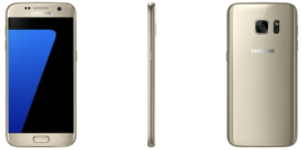

Park Gyeol
/ student
자기소개
취미
활동
SNS
GALAXY S3
GALAXY S4
GALAXY S5
GALAXY S6
GALAXY S7
GALAXY S8
GALAXY S9
GALAXY S10
GALAXY S20
GALAXY S21
GALAXY S7
 갤럭시S7은 갤럭시 S4와 비슷하게 전작이 성공을 했고 그 전작에서 크게 변하지 않고 단점들만 개선해서 나온 폰입니다.
사양은 엑시노스 8890, 5.1인치의 QHD 디스플레이를 탑재했으며 1200만 화소 후면 카메라, 3천 mAh의 배터리 등을 탑재했습니다.
S6와의 차이점은 4GB 램으로 용량을 늘렸고 갤럭시 S5 때는 실리콘 캡으로 구멍을 막으면서 구현했던 방수 방진을 실리콘캡 없이 구현해냈습니다.
또한, 전작에는 마이크로 SD카드 슬롯이 빠졌지만 다시 들어갔습니다.
디자인은 전면에 크게 박혀있었던 삼성 로고를 후면에만 배치하여 조금 더 깔끔한 느낌을 주었고 전작에서 볼륨 카와 전원 버튼의 위치가 애매했었는데 그것을 보완했습니다.
기능적으로는 Always On Display 기능이 들어갔는데 디스플레이가 꺼진 상황에서도 간단한 알림이나 시간 등을 볼 수 있는 기능이었습니다.
저를 포함한 많은 사람들이 시간을 보거나 알림만을 보기 위해 하루에도 수십 번씩 화면을 키고 끄는 습관이 있는데 이런 사람들을 위한 기능이었습니다.
또한, 갤럭시S7edge를 출시하면서 노트edge 이후 첫 엣지 모델을 출시하였습니다.
노트edge보다 곡률이 적어서 부담스럽지 않았고 좌우 양쪽으로 엣지가 있었기 때문에 디자인적인 균형 또한 맞았습니다. 하지만 엣지 디스플레이에 대한 실용성은 제시하지 못했습니다.
갤럭시S7을 홍보하자면 갤럭시 S6를 사지 못한 S4,5사용자들과 노트 3,4사용자들에게 엄청난 메리트를 줄 수 있다고 생각했습니다.
s6와 비슷한 완벽에 가까운 디자인과 AOD 기술, S6엔 없었던 OIS와 마이크로 SD카드 슬롯 등 s6의 단점을 모두 보완한 제품이었기 때문입니다.